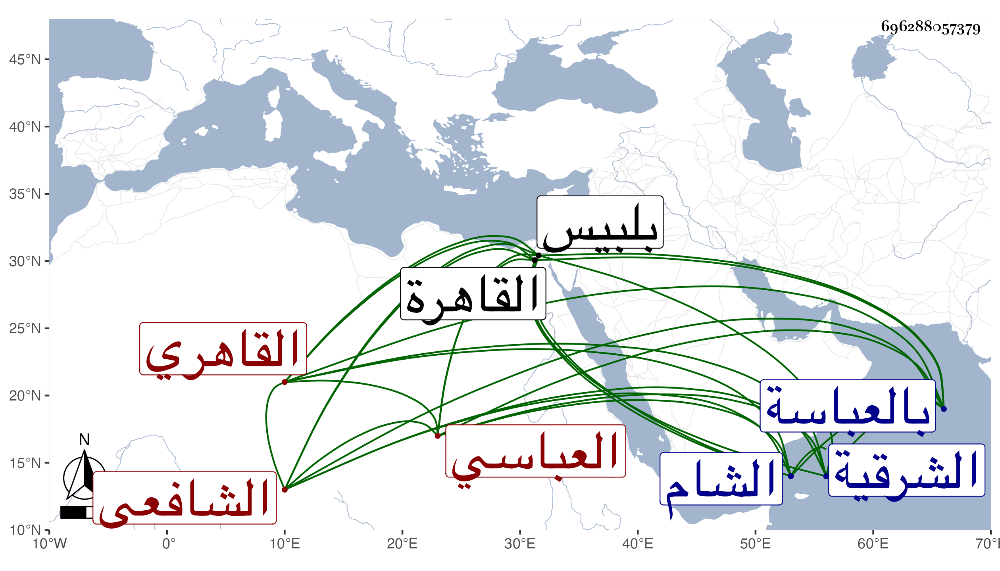

0902Sakhawi.DawLamic.ITO20230111-ara1.EIS1600.696288057379
Biography ID: 696288057379
394
عبد الوهاب بن محمد بن أحمد بن عبد الوهاب التاج بن الأمين العباسي ثم القاهري الشافعي أخو الأمين محمد الآتي وهو أكبرهما . ولد فى سنة ثمان وعشرين وثمانمائة تقريبا بالعباسة ومات أبوه في سنة أربع وأربعين وتحول إلى القاهرة بعد حفظ القرآن وكذا قال أنه حفظ المنهاج وحضر دروس العلم البلقيني وابن أخيه أبي العدل وغيرهما وكان يعلم الزين بن مزهر وإخوته لأمه بل ناب عن العلم في أماكن من الشرقية ثم أضاف إليه الزين زكريا قضاء بلبيس وغيرها وحج وجاور ودخل الشام وغيرها .
